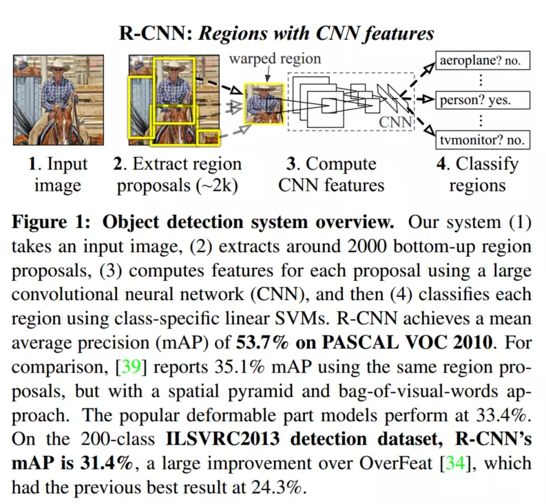

R-CNN全名叫《Rich feature hierarchies for accurate object detection and semantic segmentation》 2014【用于精确物体定位和语义分割的丰富特征层次结构】。
引言
在RCNN之前，overfeat已经是用深度学习的方法做目标检测，但RCNN是第一个可以真正可以工业级应用的解决方案。可以说改变了目标检测领域的主要研究思路，紧随其后的系列文章：Fast R-CNN ，Faster R-CNN、Mask R-CNN都沿袭R-CNN的思路。
摘要
该方法结合了两个关键的见解：
使用一个高容量的卷积神经网络将region-proposals自底而上的传播，用来定位和分割目标；
如果有标签的训练数据比较少，可以使用训练好的参数作为辅助，进行fine-tuning，能够得到非常好的识别效果提升
该方法是将region proposals 和CNN结合起来的，所以叫做R-CNN（Regions with CNN features）
介绍
特征很重要。过去十年，各类识别任务基本上都是建立在对SIFT和HOG特征的使用。进步缓慢。CNNs在1990年代被广泛使用，后来SVM的崛起而淡化。2012年，Krizhevsky等人在ImageNet挑战中的出色表现让世人重新关注CNNs(AlexNet)，它的成功是对LeCUN的CNN的改造（比如ReLU和Dropout Regularization)。于是引入思考，如何将ImageNet上的CNN分类结果运用到VOC挑战的检测任务上。
检测中遇到的第一个问题就是：需要定位一个图像中的许多物体。一个方法是将框定位看作是回归问题。但将定位问题单纯看作回归问题并不好。另一种方法是使用滑动窗口探测器，但感受视野太大，也不好使。我们通过“recognition using regions”方法，解决CNN的定位问题。
测试时，对每张图片，产生了接近2000个与类别无关的region proposal(候选区域)，region的大小不同，但都是缩放成同一大小，输入CNN当中，对每个CNN抽取一个固定长度的特征向量，然后借助专门针对类别数据的线性SVM对每个区域进行分类。

检测中遇到的第二个问题就是标签数据太少。传统的方法采用无监督训练，再进行有监督训练。本文的第二个核心就是在辅助数据集上（ILSVRC）上进行有监督预训练，再在小数据集上针对特定问题进行调优。这是在训练数据稀少的情况下一个非常有效的训练大型卷积神经网络的方法。远超高度优化的基于HOG的可变性部件模型（deformable part model，DPM）
【DPM:多尺度形变部件模型，连续获得07-09的检测冠军，2010年其作者Felzenszwalb Pedro被VOC授予”终身成就奖”。DPM把物体看成了多个组成的部件（比如人脸的鼻子、嘴巴等），用部件间的关系来描述物体，这个特性非常符合自然界很多物体的非刚体特征。DPM可以看做是HOG+SVM的扩展，很好的继承了两者的优点，在人脸检测、行人检测等任务上取得了不错的效果，但是DPM相对复杂，检测速度也较慢，从而也出现了很多改进的方法。】
R-CNN是在推荐区域上进行的操作，所以很自然地扩展到了语义分割任务上。
用R-CNN做物体检测
模块设计
物体检测系统有三个模块构成。第一个，产生类别无关的region proposal。这些推荐定义了一个候选检测区域的集合；第二个是一个大型卷积神经网络，用于从每个区域抽取特定大小的特征向量；第三个是一个指定类别的线性SVM。
1.区域推荐（region proposal）
有很多类别无关区域推荐的方法，我们采用了选择性搜索方法
2.特征提取（Feature extration）
我们使用Krizhevsky等人所描述的CNN的一个Caffe实现版本对每个推荐区域抽取一个4096维度的特征向量把一个输入为277277大小的图片，通过五个卷积层和两个全连接层进行前向传播,最终得到一个4096-D的特征向量。读者可以参考AlexNet获得更多的网络架构细节。
为了计算region proposal的特征，我们首先要对图像进行转换，使得它符合CNNC的输入（架构中的CNNC只能接受固定大小：277277）。这个变换有很多办法，我们使用了最简单的一种。无论候选区域是什么尺寸和宽高比，我们都把候选框变形成想要的尺寸。具体的，变形之前，我们现在候选框周围加上16的padding,再进行各向异性缩放。 这种形变使得mAp提高了3到5个百分点。在补充材料中，作者对比了各向异性和各向同性缩放缩放方法。
【关于图像的各项同性 各向异性可以参考我的另一篇文章，那里有具体比较说明
链接：R-CNN中的各项同性 各向异性】。
测试阶段的物体检测
测试阶段，在测试图像上使用selective search抽取2000个推荐区域（实验中，我们使用了选择性搜索的快速模式）。然后变形每一个推荐区域，再通过CNN前向传播计算出特征。然后我们使用对每个类别训练出的SVM给整个特征向量中的每个类别单独打分。
【对每一个框使用每个类别的SVM进行打分】
然后给出一张图像中所有的打分区域，然后使用NMS（每个类别是独立进行的），拒绝掉一些和高分区域的IOU大于阈值的候选框。
运行时的分析
两个特性让检测变得很高效。1、所有的CNN的参数都是跨类别共享，也就是每个候选区域通过的都是同样的CNN网络。2、通过CNN计算的特征向量相对于其他通用方法维度低，也就是速度快。（GPU：每张图13s，CPU：每张图53s）（其实速度还是很慢）
训练
有监督的预训练（Supervised pre-train）
在ILSVRC2012分类数据集上预训练了CNN。
特定领域的参数调优(Domin-specific fine-tuning)
为了让我们的CNN适应新的任务（即检测任务）和新的领域（变形后的推荐窗口）。我们只使用变形后的推荐区域对CNN参数进行SGD训练。我们替换掉了ImageNet专用的1000-way分类层，换成了一个随机初始化的21-way分类层，（其中20是VOC的类别数，1代表背景）而卷积部分都没有改变。我们对待所有的推荐区域，如果其和真实标注的框的IoU>= 0.5就认为是正例，否则就是负例。
目标种类分类器
【IOU<0.3被作为负例，ground-truth是正例，其余的全部丢弃】
2.5 在ILSVR2013数据集上的检测结果
可视化、消融、模型的错误
语义分割
总结
最近几年，物体检测陷入停滞，表现最好的检测系统是复杂的将多低层级的图像特征与高层级的物体检测器环境与场景识别相结合。本文提出了一种简单并且可扩展的物体检测方法，达到了VOC 2012数据集相对之前最好性能的30%的提升。
我们取得这个性能主要通过两个方面：第一是应用了自底向上的候选框训练的高容量的卷积神经网络进行定位和分割物体。另外一个是使用在标签数据匮乏的情况下训练大规模神经网络的一个方法。我们展示了在有监督的情况下使用丰富的数据集（图片分类）预训练一个网络作为辅助性的工作是很有效的，然后采用稀少数据（检测）去调优定位任务的网络。我们猜测“有监督的预训练+特定领域的调优”这一范式对于数据稀少的视觉问题是很有效的。
最后,我们注意到能得到这些结果，将计算机视觉中经典的工具和深度学习(自底向上的区域候选框和卷积神经网络）组合是非常重要的。
写在之后
创新点
1、采用CNN网络提取图像特征，从经验驱动的人造特征范式HOG、SIFT到数据驱动的表示学习范式，提高特征对样本的表示能力；
2、采用大样本下有监督预训练+小样本微调的方式解决小样本难以训练甚至过拟合等问题。
问题是什么
1、近10年以来，以人工经验特征为主导的物体检测任务mAP【物体类别和位置的平均精度】提升缓慢；
2、随着ReLu激励函数、dropout正则化手段和大规模图像样本集ILSVRC的出现，在2012年ImageNet大规模视觉识别挑战赛中，Hinton及他的学生采用CNN特征获得了最高的图像识别精确度；
3、上述比赛后，引发了一股“是否可以采用CNN特征来提高当前一直停滞不前的物体检测准确率“的热潮。
需要思考的问题
候选区域的提取。选择性搜索，选取合适的候选区域
特征提取网络的选择。CNN卷积神经网络进行特征提取，这个网络模型的选取，VGG16
预训练和微调。卷积神经网络的训练，用VOC数据集训练卷积神经网络，这个过程叫做预训练，得到网络参数，然后实际的分类和训练时的分类可能不同，如VOC是100分类问题，而实际的检测可能只需要10分类或者2分类，这个时候就需要微调网络，改变最后的分类网络，变成我们需要的分类。
对检测物体的分类问题。这里选择SVM用来分类，后面还有softmax可以用来分类。首先要训练每个类别的SVM，然后候选区域中的图片分别经过这些SVM进行分类。